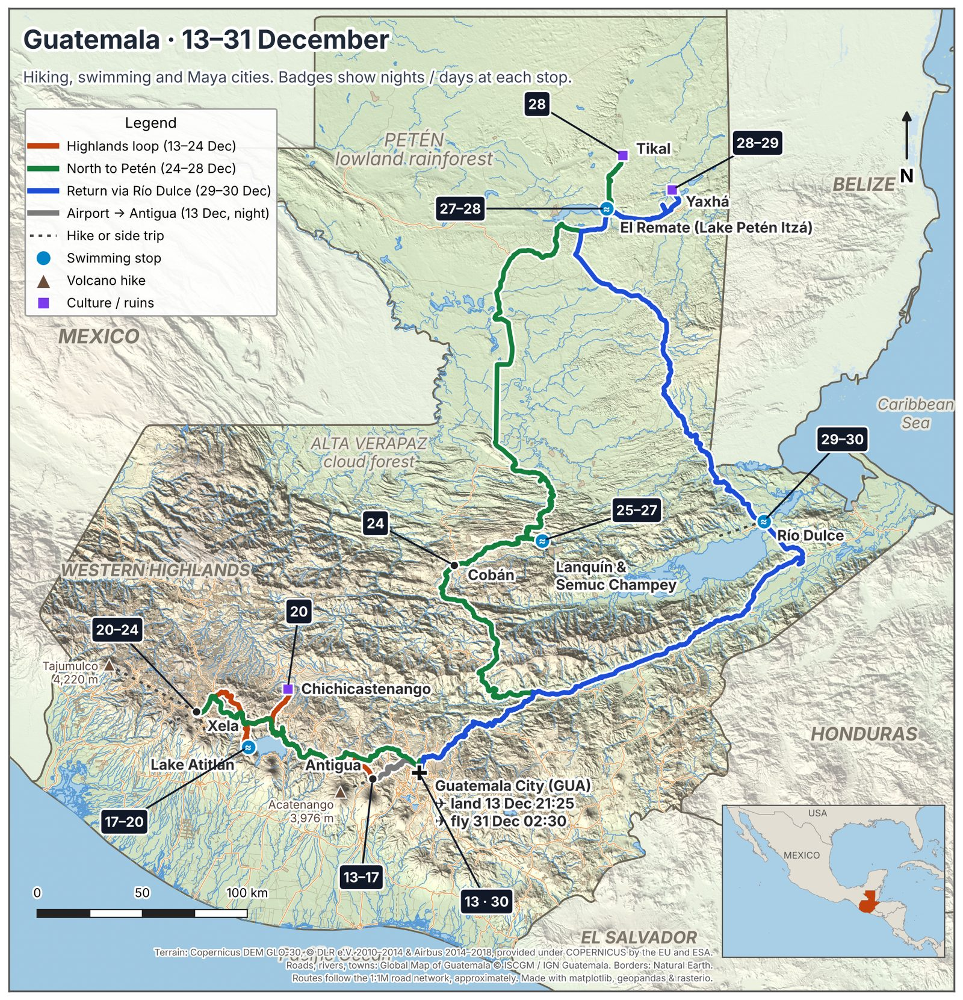
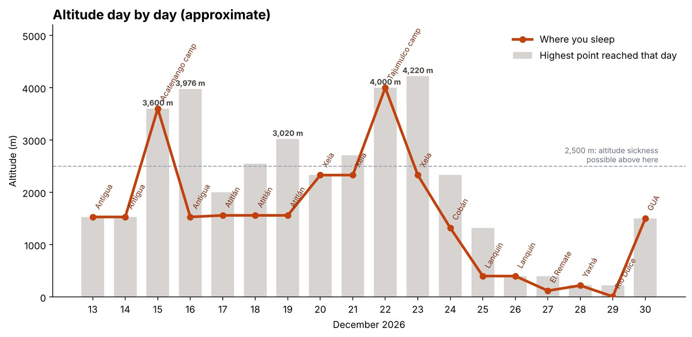
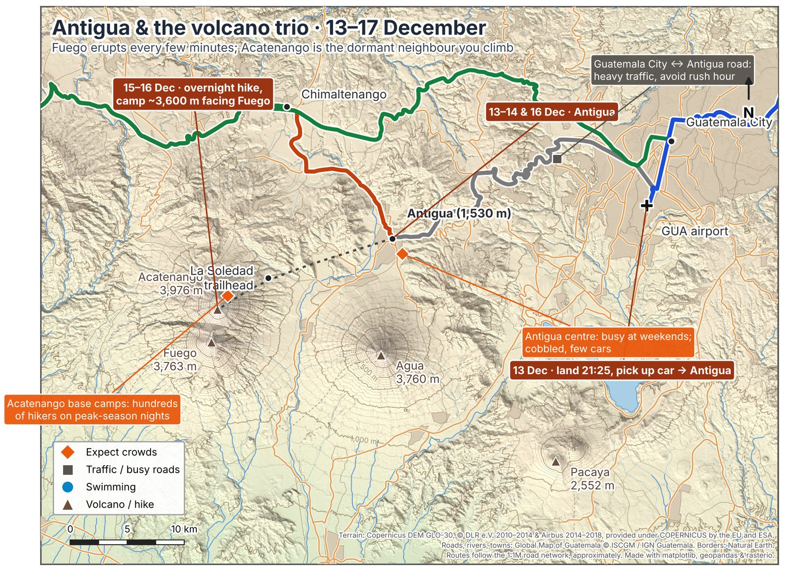
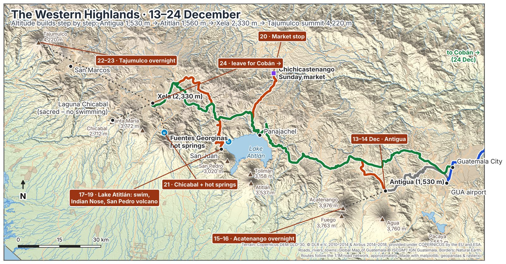
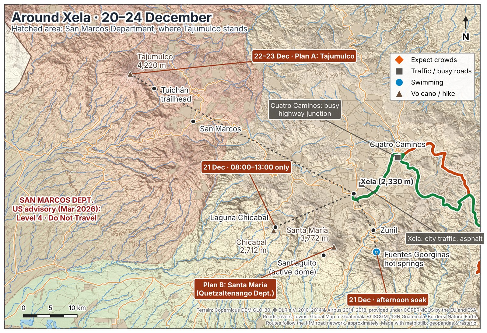
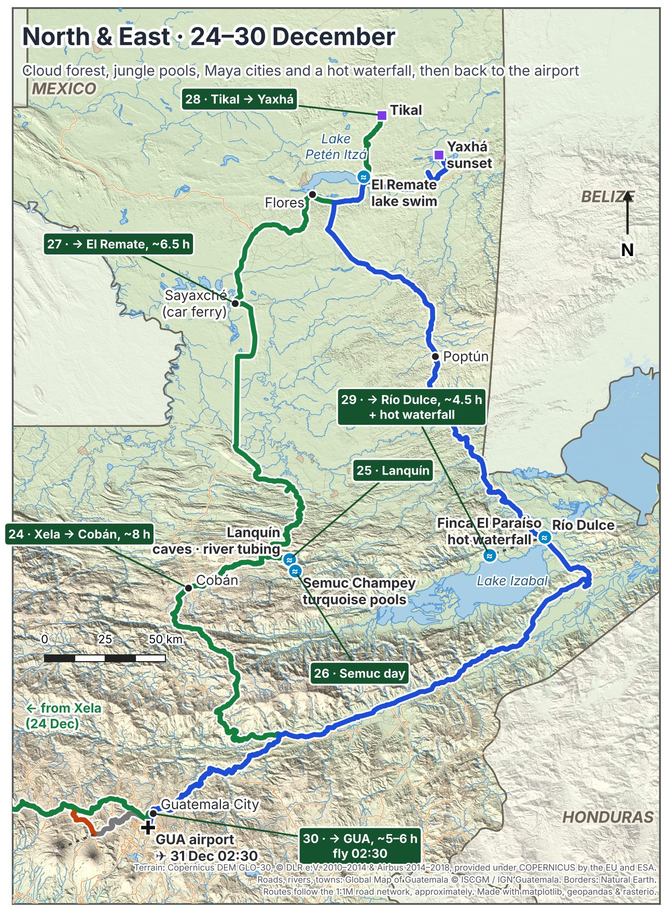
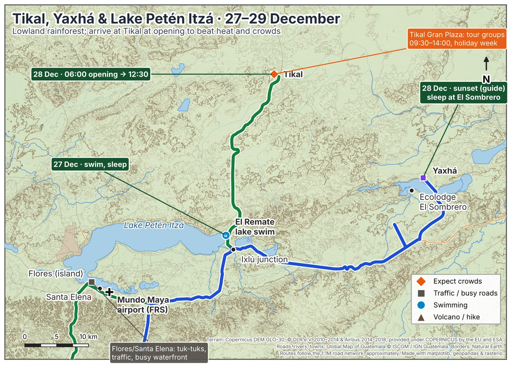
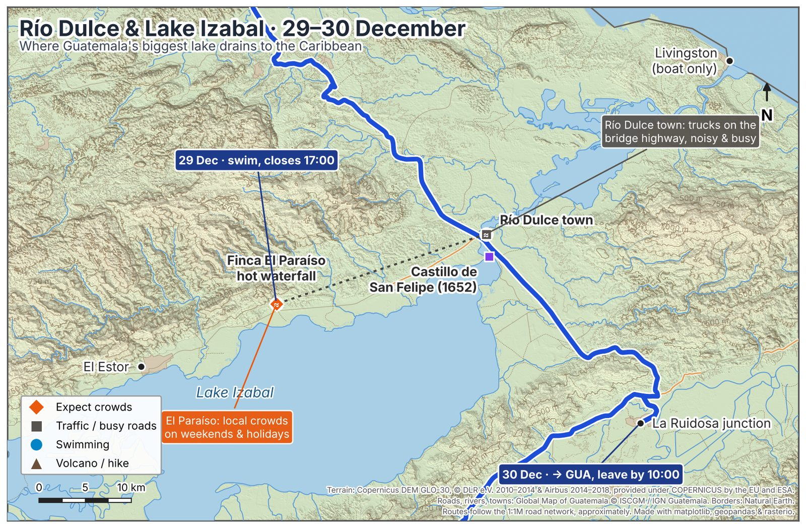

Guatemala · 13–31 December 2026
Two hikers, one rental car, lots of swimming
Version 5, written 23 November 2026. Prices and opening hours were checked online in October–November 2026 and can change. Prices are shown in quetzales (Q) and euros (€) at the mid-market rate of 15 Nov 2026 (€1 ≈ Q8.43). Where an operator lists a dollar price, the original is noted. Card and cash rates will be a few % worse. Photos load from Wikimedia Commons, so you need to be online to see them. Maps are in the
maps/folder of the repository.
Part 1 · Plan
1.1 The trip at a glance

gantt
title Guatemala, 13–31 December 2026
dateFormat YYYY-MM-DD
axisFormat %d
tickInterval 1day
section Highlands
Antigua (land 21h25) :a1, 2026-12-13, 2d
Acatenango overnight :crit, a2, 2026-12-15, 2d
Lake Atitlán (swim + 2 hikes) :a3, 2026-12-17, 3d
Chichicastenango → Xela :a4, 2026-12-20, 1d
Chicabal + hot springs :a5, 2026-12-21, 1d
Tajumulco overnight :crit, a6, 2026-12-22, 2d
section North
Xela → Cobán (Christmas Eve) :b1, 2026-12-24, 1d
Lanquín (caves, tubing) :b2, 2026-12-25, 1d
Semuc Champey pools :b3, 2026-12-26, 1d
→ El Remate, lake swim :b4, 2026-12-27, 1d
Tikal → Yaxhá sunset :b5, 2026-12-28, 1d
section Return
→ Río Dulce + hot waterfall :c1, 2026-12-29, 1d
→ GUA, fly 02h30 on 31 Dec :crit, c2, 2026-12-30, 1d

| Date | Where you sleep | Main activity | 🏊 Swim? | Drive | Details |
|---|---|---|---|---|---|
| Sun 13 | Antigua | Land at 21:25 → night shuttle | – | (shuttle ~1–1.5 h) | §2.1 |
| Mon 14 | Antigua | Explore the town, Cerro de la Cruz | – | – | §2.1 |
| Tue 15 | Acatenango camp | Overnight volcano hike | – | (tour transport) | §2.1 |
| Wed 16 | Antigua | Summit at sunrise, descend | – | (tour transport) | §2.1 |
| Thu 17 | San Juan La Laguna | Pick up car → Lake Atitlán | ✅ lake | ~3 h | §2.1 |
| Fri 18 | San Juan La Laguna | Indian Nose sunrise; Cerro Tzankujil | ✅ lake | – | §2.2 |
| Sat 19 | San Juan La Laguna | San Pedro volcano | ✅ lake | – | §2.2 |
| Sun 20 | Xela | Chichicastenango market → Xela | – | ~2.5 h + ~2 h | §2.3 |
| Mon 21 | Xela | Laguna Chicabal + Fuentes Georginas | ✅ hot springs | short | §2.4 |
| Tue 22 | Tajumulco camp | Overnight hike, highest point in Central America | – | (tour transport) | §2.4 |
| Wed 23 | Xela | Summit at sunrise, descend | – | – | §2.4 |
| Thu 24 | Cobán | Long drive; Nochebuena (Christmas Eve) | – | ~8 h | §2.4 |
| Fri 25 | Lanquín | Lanquín caves, river tubing | ✅ river | ~2 h | §2.5 |
| Sat 26 | Lanquín | Semuc Champey + K'anba cave | ✅ pools | – | §2.5 |
| Sun 27 | El Remate | Drive north; swim in Lake Petén Itzá | ✅ lake | ~6.5 h | §2.5 |
| Mon 28 | Yaxhá (lodge) | Tikal at opening → Yaxhá sunset | – | ~1.5 h | §2.6 |
| Tue 29 | Río Dulce | Drive east; Finca El Paraíso hot waterfall | ✅ waterfall | ~4.5 h + 35 min | §2.7 |
| Wed 30 | (airport) | Drive to GUA, return car, check in ~23:30 | ✅ morning | ~5–6 h | §2.7 |
| Thu 31 | ✈ | Flight departs at 02:30 | §2.7 |
1.2 What changed in this version
New in version 5:
- Every price is now in quetzales and euros (€1 ≈ Q8.43, mid-market rate of 15 Nov 2026). Dollar-priced operators keep the original figure in brackets.
- Links everywhere: each site, village and volcano links to Wikipedia or a map, and each operator, lodge and booking page has a named link instead of a bare URL.
- New Part 3, "Practical": getting by, what to avoid, health (vaccines, medicine kit, altitude) and where it's safe to walk at night.
- 👥 Crowds & 🚗 traffic boxes in every chapter, so you can avoid the busy spots.
- Five new graphics: close-up maps of Antigua, Xela, Petén and Río Dulce, plus an altitude chart.
- Tajumulco advisory: the US rates San Marcos Department (where Tajumulco is) "Do Not Travel". Santa María is now set out as Plan B.
- Nested sections, for easier navigation.
- 📋 Practical notes box at the end of every stop (where you sleep, what to book, cash to bring, swimming, night safety, health). The summary lists and tables in Parts 1 and 3 link back to each stop.
- The timeline chart renders again (it showed a Mermaid syntax error in version 4).
Carried over from version 4:
- Your flight leaves at 02:30 on 31 Dec, so the trip really ends on the evening of 30 Dec. Plan to be at the airport by about 23:30 on the 30th, with the car already returned. I moved the long drive home to the 29th–30th and split it with a night in Río Dulce. That still leaves you about 6 hours of buffer.
- You land at 21:25 on 13 Dec. I've replaced the first-night drive with a pre-booked night shuttle (§2.1). You also don't need a car until the 17th, because the Acatenango tours include transport. Picking up the car in Antigua on the 17th saves 4 rental days and 4 nights of parking.
- Chichicastenango is now a half-day stop on Sunday the 20th, not an overnight stay (§2.3). That frees a full day for Laguna Chicabal and the hot springs.
- More swimming: a cliff-jump platform at Lake Atitlán, hot springs near Xela, river tubing in Lanquín, the Semuc Champey pools, Lake Petén Itzá, and a hot waterfall on Lake Izabal (§3.6).
- Spanish: because you both speak it well, many of the guides below can be hired on the spot in Spanish for much less than a pre-booked English tour. Each chapter has a 🇪🇸 tip.
1.3 Guatemala in brief
Guatemala is the country just south of Mexico, a little larger than Iceland. Your trip crosses three very different landscapes:
- The Western Highlands (13–24 Dec): mountains at 1,500–4,200 m, about 37 volcanoes, and pine and cloud forest. December is dry and sunny, around 20–25 °C by day. Nights get cold, and the volcano camps drop below freezing. Most people here are Maya, speaking K'iche', Kaqchikel, Tz'utujil, Mam and other languages alongside Spanish. Many women wear traje, handwoven clothing whose patterns identify their village.
- Alta Verapaz (24–27 Dec): green, misty cloud-forest hills with coffee and cardamom farms. This is Q'eqchi' Maya country.
- Petén and Izabal (27–30 Dec): hot, humid lowland rainforest where the great Classic Maya cities stood (roughly 200–900 AD), and the Caribbean side around Río Dulce.
A bit of linguistics: many place names are Nahuatl, the language of the Aztec allies who came with the Spanish conquistadors, rather than Maya. Quetzaltenango means "place of the quetzal (bird)". -tenango means "place of"; compare Chichicastenango, "place of the nettles". Atitlán contains atl, "water", the same root as in ahuacatl, which reached English as avocado. Meanwhile, Xela, Semuc Champey and Tikal come from Maya languages. Two layers of naming are visible on the same map.
1.4 Booking checklist
Book now (peak season, Christmas week):
- ☐ Acatenango, 15–16 Dec: OX / Wicho & Charlie's / Soy Tours (§2.1)
- ☐ Airport night transfer, 13 Dec, 21:25 arrival: Gray Line shared or private (§2.1)
- ☐ Rental car, 17 → 30 Dec, picked up in Antigua and returned to GUA airport. National, Alamo and Enterprise share an Antigua office at 1a Avenida Norte 9B and have desks at the airport, so a one-way rental within the same company is the simplest option. Delivery within 3–15 miles costs about Q153 (€18; listed as US$20).
- National, Antigua office
- Alamo, Antigua office
- Enterprise, Antigua office
- Car type: a small SUV or crossover (e.g. Toyota Rush, Suzuki Vitara, Hyundai Creta; this is the extra clearance a 4×4 gives, without the 4×4 price). A 4×4 isn't needed: it's the dry season, and you leave the car in Lanquín for the one really rough road, to Semuc (§2.5). A normal small car would probably manage the whole route, but the extra clearance helps in three places:
- Speed bumps (túmulos): high, often unmarked, and in every village. Low cars scrape them (§3.5).
- The 11 km dirt road into Yaxhá (§2.6): potholed, with loose stones.
- The very steep road down to San Juan La Laguna (§2.2): a small 1.0–1.2 litre engine with two people and luggage will struggle on the climb back out.
- Check the one-way fee, the airport return hours, and that CDW insurance is included. CDW (collision damage waiver) is the rental company's own cover for damage to the car; they require it unless you show written proof that your credit card covers rental cars in Guatemala.
- ☐ Tajumulco, 22–23 Dec: Quetzaltrekkers or Adrenalina (§2.4); confirm access
- ☐ Lodging: Antigua (13, 14 and 16 Dec — keep your bags at the hotel during Acatenango; §2.1), San Juan La Laguna (17–19; §2.2), Xela (20, 21 and 23 — leave bags at the hotel during Tajumulco; §2.4), Cobán (24) and Lanquín (25–26; §2.5), El Remate (27) and El Sombrero at Yaxhá (28; §2.6), Río Dulce (29; §2.7). Search Booking.com, Hostelworld or Airbnb.
Book 1–2 weeks ahead:
- ☐ Tikal ticket for 28 Dec at Ministry of Culture ticket portal (foreigner category) (§2.6)
- ☐ Yaxhá sunset guide or tour (§2.6)
- ☐ Semuc / K'anba with your Lanquín hostel (§2.5)
Pay on the spot, in cash (Spanish helps):
- Lake Atitlán (§2.2): Indian Nose Q25–Q50 (€3.0–€5.9) each + optional guide Q50–Q100 (€5.9–€12); lanchas Q20–Q25 (€2.4–€3.0) each per ride; Cerro Tzankujil Q20 (€2.4); San Pedro volcano Q100 (€12) each + guide Q150–Q200 (€18–€24)
- Chichicastenango (§2.3): market and parqueo, small notes
- Xela (§2.4): Laguna Chicabal Q20 (€2.4); Fuentes Georginas Q60 (€7.1) + Q25 (€3.0) parking
- Lanquín (§2.5): tubing ~Q65–Q100 (€7.7–€12); Grutas de Lanquín Q30 (€3.6); Semuc Champey Q110 (€13); K'anba cave Q100 (€12)
- Petén (§2.6): Tikal guide Q150–Q300 (€18–€36) per group; Yaxhá entry Q80 (€9.5)
- Río Dulce (§2.7): Finca El Paraíso Q15–Q20 (€1.8–€2.4)
Part 2 · Day by day
2.1 Antigua & Acatenango (13–17 Dec)
 The Arco de Santa Catalina in Antigua, with Volcán de Agua (3,760 m) behind it.
The Arco de Santa Catalina in Antigua, with Volcán de Agua (3,760 m) behind it.
What it is. Antigua was the Spanish colonial capital until the earthquakes of 1773. Today it is a walkable grid of cobbled streets, pastel houses and ruined baroque churches, ringed by the volcanoes Agua, Fuego and Acatenango. It has the best food and services on the trip, which makes it a good base for the first few days.
👥 Crowds & 🚗 traffic here
- 👥 Antigua centre gets busy on weekends and in holiday weeks, with day-trippers from Guatemala City, though its cobbled streets have little through-traffic. Go early in the morning for quiet streets and photos at the Arco.
- 👥 Acatenango base camps: in peak season, hundreds of hikers from dozens of operators camp on the same ridge. The summit is busy at sunrise; the views make up for it.
- 🚗 Airport ↔ Antigua road via Guatemala City: heavy traffic at rush hours. At 22:30 on the 13th it will be quieter.

Sun 13 Dec — arrival at 21:25
Immigration and bags take 30–60 minutes, so expect to leave the airport around 22:30.
Why not pick up the car tonight?
- Unlit roads: highways outside the cities are mostly unlit, with unmarked speed bumps, unlit vehicles and road works that are hard to see in the dark. US government staff are told to avoid driving outside Guatemala City at night.
- An unfamiliar late-night route: after a long flight you'd have to cross Guatemala City and take the twisty mountain road down to Antigua in a car you don't know.
- Slow pickup: airport rental cars are collected from a separate parking building across from the terminal, which is slow late at night.
- You don't need it yet: Antigua is walkable, and the Acatenango tours include transport, so a car would sit in paid parking until the 17th. Picking up on the 17th saves 4 rental days.
If you'd rather have the car from day one, sleep near the airport on the 13th and collect it on the morning of the 14th.
Getting from the airport to Antigua
Pre-book a transfer from the airport (GUA) to your hotel in Antigua. It takes about 1–1.5 h at that hour. Options:
| Option | Price (checked Nov 2026) | Notes | Book |
|---|---|---|---|
| Gray Line shared night transfer | about Q122 (€15; listed as US$16) per person, minimum 2 people at night | Door-to-door to your Antigua hotel. May wait for other passengers. | Gray Line on Viator |
| Private transfer (per vehicle) | ~Q512 (€61; listed as US$67); other listings add a ~Q38 (€4.5; listed as US$5) surcharge for 22:00–04:00 | Fastest; driver waits for you | Civitatis · Viator private transfer |
| Uber | ~Q320 (€38) one-way (May 2026), varies with surge | Fewer drivers after midnight; expect a 10–15 min wait | Uber app |
| Official airport taxi desk | ask at the desk | Open 24/7, the most reliable fallback | In arrivals |
Mon 14 Dec — Antigua
Walk the Arco de Santa Catalina, La Merced, the cathedral ruins and the market. In the late afternoon, climb Cerro de la Cruz (about 20 minutes up) for the classic view over the town to Volcán de Agua. Sort out any gear you'll rent for Acatenango, and keep the day easy, since you start acclimatising here at 1,530 m.
Tue 15 – Wed 16 Dec — Acatenango overnight ⛰️
 Fuego (left), Acatenango and Agua seen from Pacaya. You'll camp on Acatenango's flank, facing Fuego.
Fuego (left), Acatenango and Agua seen from Pacaya. You'll camp on Acatenango's flank, facing Fuego.
What it is. This is Guatemala's signature hike. You climb about 1,500 m in 5–7 hours to a camp at roughly 3,600 m, directly facing Fuego, one of the world's most active volcanoes. At night it throws lava every few minutes. Before dawn you summit Acatenango (3,976 m). It's hard and cold: bring a down jacket, hat and gloves, or rent them from your operator.
⚠️ Check the status a week before. All climbing was suspended in early August 2026 after a big Fuego eruption, then reopened on 7 August. Official alerts: INSIVUMEH (national volcano institute)
Acatenango operators
All depart from Antigua with transport, gear, meals and park fees. Book now, because December is peak season.
| Operator | Price | Reputation | Book |
|---|---|---|---|
| OX Expeditions | Q910 (€108; listed as US$119) per person (Oct 2026); optional Fuego ridge add-on +Q306 (€36; listed as US$40); "Double Whammy" Q1,140 (€135; listed as US$149) | The premium choice, running since 2004. Repeatedly cited for the best guides and gear. | oxexpeditions.com |
| Wicho & Charlie's | from ~Q741 (€88; listed as US$97) (older figure; check the current price) | Mid-range. Cabins at base camp, vegan food, warm reviews. | Viator · comparison |
| Soy Tours | Q660 (€78) per person, park entry included | Local operator, priced in quetzales; recommended by centralamerica.com | comparison · map |
| Viator marketplace | Q642–Q1,150 (€76–€136; listed as US$84–150), 8+ operators, often with free cancellation | Compare recent reviews | Viator: Acatenango tours |
Side-by-side comparison: Thoroughly Travel: 12 Acatenango operators compared
🇪🇸 Spanish tip: local operators (e.g. Soy Tours) price in quetzales and are cheaper than the big English-language names. Ask at booking for a guía que hable español; you'll get more of the guide's stories.
Linguistics: Fuego's Kaqchikel name is Chi Q'aq', "where the fire is".
Thu 17 Dec — pick up the car → Lake Atitlán
Collect the rental car in Antigua (§1.4 lists the options), then drive about 3 hours from Antigua to Lake Atitlán: via the CA-1 highway and Santa Clara La Laguna, down to San Juan La Laguna. The final descent from Santa Clara to San Juan is very steep: use a low gear going down, and expect a small engine to labour on the way back up (§1.4 explains the car choice). If you arrive by 15:00, you have time for a first swim.
📋 Practical notes for this stop The same facts appear in the summary lists and tables of Parts 1 and 3.
- 🛏️ Sleep: Antigua, 3 nights (13, 14 and 16 Dec). On the 15th you sleep at the Acatenango camp; leave your big bags at the Antigua hotel. Book now (§1.4).
- 📅 Book now: the airport night transfer, the Acatenango tour and the rental car for the 17th (§1.4).
- 💵 Cash: Antigua has plenty of bank ATMs. Withdraw enough here for Lake Atitlán, because San Juan and Santa Clara have none. The lake fees and boats alone add up to roughly Q700–Q850 (€83–€101) for the two of you (my sum of the prices in §2.2), before food and lodging (§3.1).
- 💁 Tip your Acatenango guide about Q50–Q100 (€5.9–€12) per person per day (§3.1).
- 🌙 After dark: the centre is fine in the early evening on busy, lit streets. After 22:00, take a tuk-tuk or Uber even for short trips. Climb Cerro de la Cruz by day only, when the tourist police patrol it (§3.4).
- ⛰️ Altitude: Acatenango is the trip's biggest jump, from sleeping at 1,530 m to ~3,600 m, so mild symptoms are likely at camp (§3.3).
- 🚗 17 Dec drive: check for road blockades (bloqueos) on the CA-1 the evening before, especially near Nahualá (§3.5).
- 🏊 Swimming: none at this stop; the first swim is at the lake on the 17th.
2.2 Lake Atitlán (17–20 Dec)
 Lake Atitlán from the summit of Volcán San Pedro, which you'll climb on the 19th.
Lake Atitlán from the summit of Volcán San Pedro, which you'll climb on the 19th.
What it is. Atitlán is a deep lake at 1,560 m filling a huge volcanic crater, with three volcanoes on its south shore: San Pedro, Tolimán and Atitlán. A dozen Maya villages line the shore, linked by lanchas (small boats that work like water taxis). Your base, San Juan La Laguna, is calm and known for its weaving and painting cooperatives. San Pedro (the backpacker village) is next door, and San Marcos (yoga and wellness) is a 10-minute boat ride away.
👥 Crowds & 🚗 traffic here
- 👥🚗 Panajachel is the lake's busy hub: tuk-tuks, buses, a long souvenir street and weekend crowds from the capital. You only pass near it.
- 👥 San Pedro La Laguna is the backpacker party village, loud at night and especially at weekends. San Juan next door is much calmer, which is why it's your base.
- 👥 Indian Nose has a small crowd of a few dozen people at sunrise. Cerro Tzankujil is busiest on weekend afternoons; Friday the 18th should be fine.
- 🚗 Villages are linked by narrow, steep roads with tuk-tuks. Around the lake, the boats are the pleasant way to get about.
 Lake Atitlán from San Marcos, close to the Cerro Tzankujil swimming spot.
Lake Atitlán from San Marcos, close to the Cerro Tzankujil swimming spot.
Fri 18 Dec — Indian Nose at sunrise, then swimming 🏊
- Indian Nose (Rostro Maya), 2,550 m. Start around 04:00. It's 30–45 minutes up a short, steep path, then sunrise over the three volcanoes. The community fee is about Q25–Q50 (€3.0–€5.9); a local guide is optional at Q50–Q100 (€5.9–€12). Bring cash: there are no ATMs in Santa Clara or San Juan.
- Pre-booked options (with transport and fees): Turisteando, Q222 (€26; listed as US$29), from San Juan (book on WeTravel). Tours With Vick, Q344 (€41; listed as US$45), rated 9.6/10 "Exceptional" on Travelocity (book).
- 🇪🇸 Spanish tip: go to the trailhead yourselves and hire a community guide in Spanish for a fraction of the tour price.
- Afternoon: Cerro Tzankujil, San Marcos. (Lonely Planet) This sacred hill is now a nature reserve, 5 minutes' walk from the San Marcos dock. It has clear-water swimming spots and a jump platform about 12 m above the lake, with a lifeguard on duty. Entry is Q20 (€2.4) and hours are 08:00–17:00. To get there, take a lancha (boat) from the San Juan or San Pedro dock to San Marcos (about Q20–Q25 (€2.4–€3.0)).
Sat 19 Dec — Volcán San Pedro (3,020 m) ⛰️
Start early. The climb gains about 1,200 m through coffee farms and cloud forest and takes 4–5 hours up and 3–4 hours down, longer than I estimated before. You register at the park office on the north-west edge of San Pedro La Laguna. Entry is Q100 (€12) and a guide is Q150–Q200 (€18–€24) (the office assigns you one, and Spanish-speaking guides are the norm). In the afternoon, have a cool lake swim to finish.
🏊 Swimming in Atitlán: the water is fresh and cool, probably around 20 °C (I'm about 70 % sure of that figure). Swim at designated spots like Tzankujil, away from village docks; the lake has had algae and pollution problems near towns.
📋 Practical notes for this stop The same facts appear in the summary lists and tables of Parts 1 and 3.
- 🛏️ Sleep: San Juan La Laguna, 3 nights (17, 18 and 19 Dec). Book now on Booking.com, Hostelworld or Airbnb (§1.4).
- 💵 Pay on the spot, in cash; there are no ATMs in San Juan or Santa Clara (§1.4, §3.1):
- Indian Nose: community fee Q25–Q50 (€3.0–€5.9) each, plus an optional guide at Q50–Q100 (€5.9–€12)
- Lancha to San Marcos: Q20–Q25 (€2.4–€3.0) each per ride
- Cerro Tzankujil: Q20 (€2.4) each
- San Pedro volcano: Q100 (€12) each, plus a guide at Q150–Q200 (€18–€24)
- 🏊 Swimming: Cerro Tzankujil (18 Dec) and the lake around San Juan and San Pedro (17–19 Dec). Use designated spots away from village docks (§3.6).
- 🌙 After dark: San Juan and the centre of San Pedro are fine in the early evening. Don't walk the lakeside trails between villages, by day or night; take the boats. The last lanchas run at about 17:00–18:00. Do Indian Nose only with a community guide or a tour (§3.2, §3.4).
- 🤢 Motion sickness: the roads down to the lake are winding, and the boats can be bumpy; take tablets if you're prone to it, but the driver shouldn't take the drowsy type (§3.3).
2.3 Chichicastenango (20 Dec)
 Santo Tomás church. Its steps are still used for Maya ceremonies with copal incense.
Santo Tomás church. Its steps are still used for Maya ceremonies with copal incense.
What it is. Chichicastenango (Chichi) is a K'iche' Maya town with one of Central America's biggest markets every Thursday and Sunday. The white church of Santo Tomás was built in the 16th century on top of a pre-Hispanic temple platform. Its steps are still sacred: people burn copal incense and leave flower offerings on them.
👥 Crowds & 🚗 traffic here
- 👥👥 This is the most crowded stop on the trip, on purpose. Sunday market day plus festival week means packed alleys, tour buses from Antigua and Panajachel (they arrive around 10:00–14:00), firecrackers and pickpockets. I'd count it as one of your "special occasion" exceptions. If you'd rather skip it, drive straight from Atitlán to Xela (about 2.5 h) and have a slower morning by the lake.
- 🚗 Parking is scarce on market days. Use a guarded parqueo on the edge of town and walk in.
Is the Santo Tomás festival worth it if the palo volador doesn't interest you?
It's not worth an overnight stay, but you'll catch it anyway. The festival runs from 13 to 21 December, and the palo volador (men spinning down from a 30 m pole) is its headline act on the 21st. The rest of it is processions of the saint's image with cofradías (religious brotherhoods), masked dances such as the Baile de la Conquista, and fireworks in the square at night. That is good to see, but it also means bigger crowds, higher room prices and firecrackers all day.
Your Sunday the 20th falls on a market day and inside the festival week, so a half-day visit gives you the market plus the festival atmosphere at no extra cost. Then you drive on.
Sun 20 Dec plan
Leave San Juan by about 07:00 and drive ~2.5 h from Lake Atitlán to Chichicastenango. Spend 09:30–13:30 at the market, church steps and cemetery, then drive ~2 h from Chichicastenango to Xela, arriving well before dark.

Etiquette: ask before photographing people, especially during ceremonies, and enter the church only by the main door, never the side doors.
📋 Practical notes for this stop The same facts appear in the summary lists and tables of Parts 1 and 3.
- 💵 Cash: bring small notes for the market stalls and the guarded parqueo (car park). Bargain, but keep it friendly (§3.1).
- 📷 Photos: ask before photographing people, and never photograph inside the Santo Tomás church (§3.1).
- 🌙 Safety: you're here by day only. Watch for pickpockets in the market crowds (§3.4).
- 🚗 20 Dec drive: check for bloqueos on the CA-1 the evening before (§3.5).
- 🛏️ Sleep: none here; you sleep in Xela the same night (§2.4).
- 🏊 Swimming: none at this stop.
2.4 Xela & Tajumulco (20–24 Dec)


What it is. Xela ("SHEH-la") is Guatemala's second city, at 2,330 m. It's cooler and much less touristy than Antigua, and full of Spanish schools and serious hiking operators. The nickname comes from its K'iche' name, Xelajú, usually glossed "under the ten (mountains)". Its official name, Quetzaltenango, is Nahuatl (§1.3).
👥 Crowds & 🚗 traffic here
- 🚗 Xela is a real city: traffic, asphalt and exhaust in the centre and on the ring roads. The historic centre around Parque Centro América is pleasant on foot.
- 🚗 Cuatro Caminos (the junction you pass on 20 and 24 Dec) is a busy truck-and-bus crossroads.
- 👥 Fuentes Georginas gets local family crowds at weekends and holidays. Monday the 21st should be calmer; arrive after lunch, once the morning tours have gone.
- 👥 Tajumulco is far less crowded than Acatenango: a few groups at camp, no huts.
Mon 21 Dec — Laguna Chicabal + Fuentes Georginas 🏊
 Laguna Chicabal, a crater lake sacred to the Mam Maya.
Laguna Chicabal, a crater lake sacred to the Mam Maya.
- Morning: Laguna Chicabal (2,712 m). (volcano on Wikipedia) This misty, emerald crater lake is sacred to the Mam Maya; swimming is forbidden, and you'll see altars along the shore. It's open only 08:00–13:00, so go first thing. Entry is Q20 (€2.4) for foreigners. The walk up from the entrance takes roughly 1–1.5 h each way.
- Afternoon: Fuentes Georginas hot springs. These are steaming volcanic pools in cloud forest above Zunil. Entry is Q60 (€7.1) per adult plus Q25 (€3.0) to park, cash only. Bring a swimsuit, sandals and a towel.
Tue 22 – Wed 23 Dec — Tajumulco overnight (4,220 m) ⛰️
 Tajumulco, the highest point in Central America.
Tajumulco, the highest point in Central America.
The trek starts at about 3,000 m at Tuichán, 2–3 h from Xela. You camp near the summit and walk up for sunrise, often above a sea of cloud. After nine days at altitude you'll be well acclimatised. In Mam the name means "above the clouds".
| Operator | Price | Notes | Book |
|---|---|---|---|
| Quetzaltrekkers | Q800 (€95) per person (Q850 (€101) from 1 Jan 2027) | Volunteer guides; profits go to a children's charity. There's a mandatory briefing at 18:00 the evening before (21 Dec), with a 05:00 start. | Quetzaltrekkers: Tajumulco |
| Adrenalina Tours | Q955–Q1,110 (€113–€131; listed as US$125–145) per person (minimum 2); private transport add-on Q1,150 (€136; listed as US$150) | One of Xela's longest-running agencies; Spanish-language reviews praise their organisation | Adrenalina on WeTravel · adrenalinatours.com |
🛑 Read before booking Tajumulco: official travel advice. Tajumulco lies in San Marcos Department. Since March 2026 the US State Department has rated San Marcos "Level 4: Do Not Travel" because of cartel and gang crime, and its staff may not go there at all. The UK FCDO advises against travel only within 5 km of the Mexican border, a strip Tajumulco is outside of. Check your own government's advice and your travel insurance (some policies don't cover areas under a do-not-travel warning) before choosing. Plan B, Volcán Santa María (3,772 m), is in Quetzaltenango Department, right above Xela, and has no such warning. It's a hard 1,500 m climb, best done as a pre-dawn hike for sunrise, looking down on the erupting Santiaguito dome. Quetzaltrekkers and Adrenalina both run it.
⚠️ Access check. Another Xela operator (Monte Verde Tours) lists its Tajumulco trek as unavailable because of conflicts between neighbouring communities, and offers Santa María instead. Quetzaltrekkers says its Tajumulco treks are back and bookings are open. Confirm with your operator a week ahead. If it's off, the backup is Volcán Santa María (3,772 m): a one-day sunrise hike from Xela, with a view down onto the constantly erupting Santiaguito dome.
🇪🇸 Spanish tip: both operators run in Spanish. Adrenalina's office is just off Parque Centro América, if you want to sort out details in person on the 20th.
Thu 24 Dec — Xela → Cobán (~8 h)
Leave Xela at 06:00 for Cobán. The route runs CA-1 → Guatemala City ring road → CA-9 → El Rancho → CA-14 north to Cobán, aiming to arrive by about 14:00. Christmas Eve traffic around Guatemala City can be heavy, so don't dawdle. At night it's Nochebuena, the main Christmas celebration: families eat tamales and drink ponche (hot fruit punch), and at midnight the whole town sets off fireworks at once.
📋 Practical notes for this stop The same facts appear in the summary lists and tables of Parts 1 and 3.
- 🛏️ Sleep: Xela, 3 nights (20, 21 and 23 Dec). On the 22nd you sleep at the Tajumulco camp; leave your big bags at the Xela hotel. Book now (§1.4).
- 📅 Book now: Tajumulco (or Santa María) with Quetzaltrekkers or Adrenalina (§1.4). Quetzaltrekkers' briefing is at 18:00 on 21 Dec, so be back from the hot springs by then.
- 💵 Cash: Xela has bank ATMs (§3.1). Pay on the spot, in cash (§1.4):
- Laguna Chicabal: Q20 (€2.4) each (open 08:00–13:00)
- Fuentes Georginas: Q60 (€7.1) each plus Q25 (€3.0) parking, cash only
- 💁 Tip your Tajumulco guide about Q50–Q100 (€5.9–€12) per person per day (§3.1).
- 🏊 Swimming: the Fuentes Georginas hot springs (21 Dec). No swimming in Laguna Chicabal, which is sacred (§3.6).
- 🌙 After dark: the centre around Parque Centro América is fine in the early evening; take a taxi after about 21:00 (§3.4).
- ⛰️ Altitude: you sleep at ~4,000 m on Tajumulco, but after 3 nights at 2,330 m in Xela you'll be better adapted than on Acatenango (§3.3).
- 🛑 Advisory: Tajumulco is in San Marcos Department, rated "Do Not Travel" by the US; Santa María is Plan B (see the box above).
- 🚗 24 Dec drive: check for bloqueos on the CA-1 the evening before, and expect heavy Christmas Eve traffic around Guatemala City (§3.5).
2.5 Cobán, Lanquín & Semuc Champey (24–27 Dec)

What it is. Alta Verapaz is green, rainy and mountainous. Cobán is the hub; Lanquín is a small Q'eqchi' town in a river valley, and the base for Semuc Champey. Semuc is a 300 m natural limestone bridge over the Río Cahabón: the river vanishes underneath it, and on top sits a staircase of turquoise pools you can swim in.
👥 Crowds & 🚗 traffic here
- 👥 Semuc Champey is very busy from about 10:30 to 15:00, when hostel tours arrive, and Christmas week brings domestic tourists too. Be at the gate at opening and swim before the crowds, or come back for the last two hours.
- 👥 K'anba cave tours leave every half hour in groups. Take the first one of the day.
- 🚗 Cobán is a busy town with narrow, congested streets. The Cobán–Lanquín road is winding with lots of pickups, but traffic is light.
 The pools at Semuc Champey.
The pools at Semuc Champey.
Linguistics: Semuc Champey is Q'eqchi', usually glossed "where the river hides under the stones/earth", which is exactly what you see.
Fri 25 Dec — Cobán → Lanquín (~2 h) 🏊
The last stretch from Cobán to Lanquín is a winding mountain road. In the afternoon, go tubing on the river (~Q65–Q100 (€7.7–€12) each, arranged by your hostel). At dusk, visit the Grutas de Lanquín (Q30 (€3.6) for foreigners), where thousands of bats stream out of the cave mouth.
🎄 It's Christmas Day, so some operators may not run. Message your hostel a few days ahead.
Sat 26 Dec — Semuc Champey 🏊
- Park entry: sources disagree. Q50 (€5.9) for foreigners is the older figure, and one current tour listing says Q110 (€13). Bring Q110 (€13) each in cash.
- Leave the car in Lanquín. The last ~10 km from Lanquín to the Semuc Champey entrance are very rough, so take the hostels' 4×4 pickups from Lanquín.
- Suggested day: start with the K'anba cave (candlelit, partly swimming, with a rope swing and waterfall). Then climb to El Mirador (30–40 min, steep) for the classic view from above. Finish by swimming in the pools, before the afternoon crowds or after them.
| Option | Price | Rating / notes | Book |
|---|---|---|---|
| Greengos (hostel by the park entrance) | K'anba cave Q100 (€12) (09:15–12:00); "Extreme Tubing" Q100 (€12) (14:00–17:00) | 10-minute walk to the pools, so visit them on your own | Booking.com |
| Marvelus Travel: Semuc + K'anba guided tour from Lanquín | Q268–Q275 (€32–€33; listed as US$35–36); park entry (Q110 (€13)) not included | 8.8–9.0/10 on Expedia/Travelocity; bilingual guide | Marvelus on Expedia |
| El Retiro (lodge on the river) | cave-and-pools itinerary; ask for the price | riverside lodge | Booking.com |
🇪🇸 Spanish tip: you can buy the K'anba cave entry directly at the cave mouth and join a local guide group in Spanish. Tours leave every half hour.
Where to stay in Lanquín (25–26 Dec)
book soon, because Christmas week is busy. Look on Booking.com and Hostelworld for "Lanquín" or "Semuc Champey"; staying near the park saves the pickup ride. Greengos and El Retiro (above) are two well-known options.
Sun 27 Dec — Lanquín → El Remate (~6.5 h) 🏊
Leave Lanquín at 06:30 for El Remate. The route goes north via Raxruhá and Sayaxché, where a small car ferry crosses the Río La Pasión, then on to Flores and El Remate. I'm about 70 % sure the whole road is paved now, so ask at your hostel about current conditions. Arrive mid-afternoon and swim off a dock in Lake Petén Itzá, which is warm, calm and clear around El Remate.
 Lake Petén Itzá near El Remate.
Lake Petén Itzá near El Remate.
Why El Remate rather than Flores? It's 30 minutes closer to Tikal and quieter, with better swimming. Flores (below) is a tiny, pretty island town 30 minutes away. It was the last Maya city to fall to the Spanish, in 1697, and is worth an evening if you have energy.

📋 Practical notes for this stop The same facts appear in the summary lists and tables of Parts 1 and 3.
- 🛏️ Sleep: Cobán, 1 night (24 Dec), then Lanquín, 2 nights (25 and 26 Dec). Book now; Christmas week is busy (§1.4).
- 📅 Book 1–2 weeks ahead: Semuc Champey and K'anba with your Lanquín hostel, and ask whether tubing runs on Christmas Day (§1.4).
- 💵 Cash: draw it in Cobán. I'm not sure Lanquín has a reliable ATM, so don't count on one (§3.1). Pay on the spot, in cash (§1.4):
- River tubing: ~Q65–Q100 (€7.7–€12) each
- Grutas de Lanquín: Q30 (€3.6) each
- Semuc Champey: bring Q110 (€13) each
- K'anba cave: Q100 (€12) each
- The hostel pickup truck from Lanquín to Semuc: ask your hostel for the fare
- 🏊 Swimming: river tubing (25 Dec), and the Semuc pools and K'anba cave (26 Dec); see §3.6.
- 🌙 After dark: stay at your lodge. The roads are dark and unlit, and there's nothing to walk to (§3.4).
- 🦟 Mosquitoes: you're in the lowlands now, where dengue mosquitoes bite by day. Use DEET or picaridin repellent (§3.3).
- 🤢 Motion sickness: the Cobán–Lanquín road is very winding (§3.3).
2.6 Tikal & Yaxhá (27–29 Dec)
 Temple I ("Temple of the Great Jaguar"), the tomb of king Jasaw Chan K'awiil, who died in 734.
Temple I ("Temple of the Great Jaguar"), the tomb of king Jasaw Chan K'awiil, who died in 734.
What it is. Tikal was one of the greatest Classic Maya cities. Its steep temples rise above the rainforest canopy, and the jungle around them is alive with spider and howler monkeys, toucans and coatis. Yaxhá is smaller and much quieter, between two lagoons, and its Temple 216 gives one of the best sunsets in Guatemala.
👥 Crowds & 🚗 traffic here
- 👥 Tikal's Gran Plaza and Temple IV fill up with tour groups from about 09:30 to 14:00, more so in the Christmas–New Year week. Arriving at 06:00 gives you 2–3 calm hours. The outer groups (Mundo Perdido, Temple VI) stay quiet all day.
- 👥 Yaxhá is quiet except at sunset on Temple 216, where 30–80 people gather. It's still nothing like Tikal.
- 🚗 Flores / Santa Elena: tuk-tuks, traffic and a busy causeway. Your base, El Remate, is a quiet village.

Linguistics: "Tikal" is a modern name, often glossed as Yucatec Maya for "at the water hole". The city's own name, read from its hieroglyphs, was Yax Mutal.
Mon 28 Dec — Tikal at opening → Yaxhá at sunset
- Tikal tickets must be bought before you reach the park: Q150 (€18) per foreign adult. A sunrise or sunset add-on is +Q100 (€12) and sunrise or sunset entry requires an authorised guide. Buy online (international cards pay +2.3 %) or in cash at a bank. Official portal: Ministry of Culture ticket portal (choose extranjeros). The park is open 06:00–18:00, and no ticket includes a guide. There are no ATMs at Tikal.
- Plan: be at the Tikal gate when it opens at 06:00. The drive from El Remate to Tikal takes about 35 minutes. Climb Temple IV for the view over the canopy, then walk the Gran Plaza (Temples I and II), Mundo Perdido and the Central Acropolis. Leave around 12:30.
- Guide: an accredited guide hired at the entrance costs about Q150–Q300 (€18–€36) per group. 🇪🇸 In Spanish you have a much wider choice of guides. Pre-booked options include Mayan World Travel's sunrise tour from Flores (Q367 (€44; listed as US$48), 8.4/10) and Tikal Express's sunrise tour; both exclude tickets.

- Afternoon: drive ~1.5 h from Tikal to Yaxhá. The last 11 km are a potholed dirt road: fine in a small SUV in the dry season if you take it slowly (§1.4 explains the car choice). Yaxhá entry is Q80 (€9.5) for foreigners, and the official hours are 08:00–17:00. Sunset in late December is around 17:30, after closing, so do it with a guide or tour that has sunset access. Ask at your lodge, or join a group tour arriving from Flores. Tour options from Flores: Adrenalina Tours sunset tour, Q268 (€32; listed as US$35) (entry extra); Mayan World Travel shared sunset tour, Q191 (€23; listed as US$25), rated 9.4/10 "Exceptional"; Turisteando, Q222 (€26; listed as US$29) (book on WeTravel). Adrenalina also runs a Tikal + Yaxhá in one day tour for Q420 (€50; listed as US$55), if you'd rather not drive.
 Temple 216 at Yaxhá, also called the Temple of the Red Hands, more than 30 m tall.
Temple 216 at Yaxhá, also called the Temple of the Red Hands, more than 30 m tall.
- Sleep at Yaxhá so you avoid the dirt road in the dark. Ecolodge El Sombrero (map) sits on the Yaxhá lagoon with solar-powered, mosquito-netted bungalows. It's rated 8.4/10 from 105 reviews on one site, and quotes range from about Q550–Q894 (€65–€106; listed as US$72–117) a night for two. Find it on Travelocity, Expedia or Booking.com.
📋 Practical notes for this stop The same facts appear in the summary lists and tables of Parts 1 and 3.
- 🛏️ Sleep: El Remate, 1 night (27 Dec), then Ecolodge El Sombrero at Yaxhá, 1 night (28 Dec). Book now (§1.4).
- 📅 Book 1–2 weeks ahead: the Tikal ticket online, and a Yaxhá sunset guide or tour (§1.4).
- 💵 Cash: there are no ATMs at Tikal. Draw money in Flores or Santa Elena on the 27th (§3.1). Pay on the spot, in cash (§1.4):
- Tikal guide hired at the entrance: about Q150–Q300 (€18–€36) per group
- Yaxhá entry: Q80 (€9.5) each
- 🏊 Swimming: Lake Petén Itzá off the docks at El Remate (27 Dec). Not in Lake Yaxhá, which reportedly has crocodiles (§3.6).
- 🌙 After dark: Flores island is lively and fine in the evening. El Remate is very quiet, so bring a torch. Be in the parks only with a guide at sunrise or sunset (§3.4).
- 🦟 Heat and mosquitoes: use repellent by day against dengue, drink plenty, and carry oral rehydration salts for the heat (§3.3).
2.7 Río Dulce & the drive home (29–31 Dec)

👥 Crowds & 🚗 traffic here
- 🚗 Río Dulce town sits on the main Petén highway. Trucks grind over the big bridge day and night, and the strip under it is noisy and congested. Stay at a lodge on the river away from the bridge (all of those listed are), not in town.
- 👥 Finca El Paraíso is a favourite local day out, so it gets crowded at weekends and holidays. The 29th is a Tuesday but falls in holiday week, so go mid-afternoon after the lunch crowd.
- 🚗 30 Dec, CA-9 into Guatemala City: heavy truck traffic and the capital's afternoon jams, which is why you should leave by 10:00.
Tue 29 Dec — Yaxhá → Río Dulce (~4.5 h) + hot waterfall 🏊
Drive from Yaxhá back to the Ixlú junction, then south on the main paved highway via Poptún to Río Dulce, the river town where Lake Izabal drains toward the Caribbean. Aim to arrive by 13:30.
Afternoon: Finca El Paraíso hot waterfall (Lonely Planet) (about 35 minutes west of Río Dulce, on the El Estor road). Here a hot spring pours over a wide waterfall roughly 8–12 m high into a cool river pool. You swim where hot and cold water mix, and the water is very hot right under the falls. Entry is about Q15–Q20 (€1.8–€2.4); it closes at 17:00, and it's a 5-minute walk from the gate. Bring water shoes. It can be busy at weekends, but the 29th is a Tuesday.
Where to stay in Río Dulce (29 Dec)
Prices and ratings from Booking.com, checked Nov 2026:
| Lodge | Score | From (2 people, 1 night) | Why |
|---|---|---|---|
| Boatique Hotel & Marina | 9.2, 541 reviews | ~Q359 (€43; listed as US$47) | On the river, with a pool; also posts self-guided directions to El Paraíso |
| Nanajuana Río Dulce | 9.2, 558 reviews | ~Q252 (€30; listed as US$33) | Great value |
| Hacienda Tijax Jungle Lodge | "Fabulous", 290 reviews | ~Q581 (€69; listed as US$76) | Large private reserve, pool, birdlife, restaurant over the water |
| Casa Perico | – | – | Small, quiet eco-hostel reachable only by boat (they collect you) |
Search all: Booking.com: Río Dulce hotels
Wed 30 Dec — Río Dulce → GUA (~5–6 h), fly at 02:30
- Morning (optional): swim from your lodge's dock, or visit the Castillo de San Felipe de Lara, a Spanish fort from 1652 built against pirates, 3 km from town. It opens at 08:00.
- Leave Río Dulce for the airport by 10:00 at the latest. The route is CA-13 → La Ruidosa → CA-9 → Guatemala City. Allow extra time for the city's afternoon traffic.
- Arrive in Guatemala City around 16:00. Refuel, have dinner, and return the car in the evening. Confirm the airport rental desk's evening hours, or the after-hours key-drop procedure, in advance.
- Be at the terminal by 23:30 for the 02:30 departure on the 31st. If you want a shower and nap first, book a day-use room at an airport-area hotel in Zona 13.
📋 Practical notes for this stop The same facts appear in the summary lists and tables of Parts 1 and 3.
- 🛏️ Sleep: a lodge on the river away from the bridge, 1 night (29 Dec). Book now (§1.4). On the 30th you don't sleep; you fly at 02:30.
- 📅 Car return: confirm the airport desk's evening hours or key-drop procedure (§1.4).
- 💵 Pay on the spot, in cash: Finca El Paraíso, about Q15–Q20 (€1.8–€2.4) each; it closes at 17:00 (§1.4). Top up your cash in Flores on the 27th; I'm about 80 % sure Río Dulce town has bank ATMs, but don't rely on it (§3.1).
- 🏊 Swimming: El Paraíso hot waterfall (29 Dec) and your lodge's dock or pool (29–30 Dec); see §3.6.
- 🌙 After dark: stay at your lodge; the town strip under the bridge isn't somewhere to wander. In Guatemala City on the evening of the 30th, stay inside venues or cars in Zones 10 and 13, and avoid Zone 18, Zone 3 and Villa Nueva entirely; your route never goes there (§3.2, §3.4).
- 🦟 Mosquitoes: still dengue country; use repellent by day (§3.3).
Part 3 · Practical
3.1 Getting by in Guatemala
Money
- The currency is the quetzal (Q). At the time of writing, €1 ≈ Q8.43. Carry small notes (Q5–Q50). Tuk-tuks, boats, market stalls and park gates often can't change a Q200 note.
- Cash is essential: San Juan and Santa Clara have no ATMs (§2.2), Tikal has none (§2.6), Lanquín may not have a reliable one (§2.5), and many park gates and lanchas take cash only. Draw money in Antigua (§2.1), Xela (§2.4), Cobán (§2.5) and Flores (§2.6). Panajachel has ATMs too, but your route only passes near it. I'm about 80 % sure Río Dulce town has bank ATMs (§2.7).
- Use ATMs inside banks or shopping centres during opening hours, not stand-alone street machines, where card skimming is more common.
- Tipping: about 10 % in sit-down restaurants (check whether propina is already on the bill). For hiking guides (Acatenango §2.1, Tajumulco §2.4), Q50–Q100 (€5.9–€12) per person per day is usual. Round up for drivers.
Language & people
- Your Spanish will make a huge difference. Use usted with older people and officials. In the highlands, many people speak Spanish as a second language after a Mayan language, so speak clearly and simply.
- Greet people when you walk into a shop or a room (buenos días / buenas tardes). It matters here.
- Ask before photographing people, especially women, children and ceremonies, and never photograph inside the Santo Tomás church in Chichicastenango (§2.3). Some people will ask for a small payment for a photo, which is fair.
- Bargaining: it's normal in markets (Chichi §2.3, Antigua's handicraft market §2.1), but keep it friendly. Don't haggle in shops with fixed prices, or over a few quetzales with a weaver.
Food & water
- Don't drink tap water, and don't use it to brush your teeth. Most hotels and hostels have big refill jugs, so bring a refillable bottle.
- Street food is fine if it's hot, cooked in front of you and busy. Be careful with raw salads and unpeeled fruit, and with ice outside tourist restaurants.
- Try pepián (a spiced meat stew), kak'ik (Q'eqchi' turkey soup, a Cobán speciality), tamales (especially on Christmas Eve), chuchitos, rellenitos (sweet plantain), and atol (a hot corn drink).
Everyday practicalities
- Toilet paper goes in the bin, not the toilet, almost everywhere. Carry your own paper and hand gel; public toilets often charge Q1–Q3 (€0.1–€0.4).
- Get a local SIM or eSIM (Tigo and Claro are the two networks) and use WhatsApp, which is how hotels, guides and tour operators communicate.
- Download offline maps (Google Maps or Maps.me) and Waze. Mobile signal disappears on parts of the Lanquín and Sayaxché roads.
- Electricity is 120 V with US-style plugs (types A/B), so European travellers need adapters.
3.2 What to avoid
- Driving at night: see §3.5.
- Zone 18 of Guatemala City, the city of Villa Nueva and Zone 3 are high-crime areas. Your route never goes there; you're in the city only on the evening of 30 Dec (§2.7).
- Chicken buses and street-hailed white taxis. They're colourful, but US government staff are banned from using both because of crime and accidents. Use Uber in Guatemala City and Antigua, taxis your hotel calls for you, and tuk-tuks in towns.
- Walking between Lake Atitlán villages on lakeside trails without a guide: these isolated paths have a history of robberies. Take the boats (§2.2).
- Showing off valuables: keep your phone away on busy streets, leave jewellery at home, and carry a day's cash in a front pocket.
- Illegal drugs: the penalties are harsh, and the trade behind them is violent.
- Hikes on Volcán de Agua or Pacaya without a reputable guide: armed robberies of hikers have been reported there.
- Getting into political protests or road blockades (bloqueos). If you meet one, turn round and wait it out.
- Feeding or touching dogs: rabies is present, and post-exposure vaccine is only available in larger city hospitals.
3.3 Health
I'm not a doctor. Book a travel-clinic appointment now. Your trip is 3 weeks away, and some vaccines need time to take effect. The clinic can also prescribe the antibiotic marked ℞ below (℞ = needs a prescription).
Vaccines
- Recommended for most travellers (CDC): hepatitis A and typhoid, plus routine vaccines (MMR, tetanus–diphtheria–pertussis, polio). Travel clinics also often suggest hepatitis B.
- Rabies: consider it, since you'll be in rural areas and around dogs. In Guatemala, treatment after a bite is only available in larger city hospitals.
- No vaccine is required for entry if you're coming directly from Europe or the US.
Mosquitoes: dengue, malaria
- Dengue: Guatemala had record dengue numbers in 2024. The mosquitoes bite by day, mostly in the lowlands and towns: Lanquín and Semuc (§2.5), Petén (§2.6), Río Dulce (§2.7). Use DEET or picaridin repellent and wear long sleeves at dusk in the lowlands.
- Malaria: CDC says there's no risk in Antigua, Guatemala City or around Lake Atitlán, and only low risk in rural lowlands such as Petén. For your route, CDC advises bite prevention rather than pills. Confirm this with your clinic.
Altitude sickness: the real risk on this trip
Altitude sickness (doctors call the common form acute mountain sickness, or AMS) is the most likely health problem on your itinerary, because you sleep at ~3,600 m on Acatenango (§2.1) and ~4,000 m on Tajumulco or Santa María (§2.4). Above about 2,500 m, symptoms are common.
How much should you worry? For fit people in their 20s and 30s, expect it to be a nuisance rather than a danger: a headache, poor sleep and low appetite at camp, gone after you descend the next morning. Two caveats:
- Fitness doesn't protect you. It makes the climb easier, but who gets AMS depends mostly on how fast you gain height and on personal susceptibility. Fit people who push hard on the way up get it as often as anyone, sometimes more.
- Acatenango is the bigger jump. On day 3 you go from sleeping at 1,530 m to sleeping at ~3,600 m. Mild symptoms there are very common. Tajumulco comes after 3 nights at 2,330 m in Xela, so you'll be better adapted.
What to do:
- Go slowly on the way up (the guides set the pace), drink 3–4 L of water, and skip alcohol the night before and at camp.
- Use your altitude medication as your doctor prescribed: either preventively from the day before the climb, or at the first symptoms, depending on what they told you. Bring painkillers for headaches too.
- 🚩 Descend straight away if you get: a headache that painkillers don't fix, vomiting, unusual clumsiness or confusion (walking "drunk"), or breathlessness at rest or a wet cough. These are signs of the rare but serious forms: HACE (high-altitude cerebral oedema, fluid on the brain) and HAPE (high-altitude pulmonary oedema, fluid in the lungs). Going down is the treatment. On both volcanoes you can be 1,000 m lower within 2–3 hours, and guides are trained for this.
- Climbing to the summit is optional. If one of you feels bad at camp, staying put or descending early is a perfectly good outcome.
Suggested medicine kit (for two people)
Brand names vary by country; the generic (active-ingredient) name is the one to ask for at a pharmacy.
| Item | What it is | When to use it on this trip |
|---|---|---|
| Your regular prescriptions, plus copies of the prescriptions | Whatever you normally take | Pharmacies may not carry the same brands, and a copy helps at customs |
| Paracetamol (called acetaminophen in the US; brands Panadol, Tylenol) | A painkiller and fever reducer | Altitude headaches, aches, fever. Gentle on the stomach. |
| Ibuprofen (brands Advil, Nurofen) | A painkiller that also reduces swelling (an anti-inflammatory) | Sore knees after volcano descents, strains. Take it with food. |
| Oral rehydration salts (ORS; brands Dioralyte, Pedialyte, or suero oral in Guatemala) | Sachets of salts and sugar to mix with clean water | Replace the water and salts you lose through diarrhoea, vomiting or heavy sweating in hot Petén |
| Loperamide (brand Imodium) | An anti-diarrhoea medicine that slows the gut | Short-term relief from diarrhoea when you can't reach a toilet, e.g. on long drive days. Don't use it if you have a fever or blood in your stool; see a doctor instead. |
| ℞ A standby antibiotic for traveller's diarrhoea (often azithromycin) | A prescription antibiotic your doctor gives you "just in case" | Only for severe diarrhoea (fever, blood, or many trips a day) when you can't see a doctor. Your doctor decides which drug and dose. |
| Your altitude medication (you have it; often acetazolamide, brand Diamox) | A prescription drug that helps the body adjust to thin air | Acatenango and Tajumulco/Santa María nights. See the altitude section above. |
| Motion-sickness tablets (e.g. dimenhydrinate, brand Dramamine/Travel Gum; or meclizine) | Prevents nausea from motion. Some types make you drowsy. | The winding Lanquín (§2.5) and Atitlán (§2.2) roads, and lancha (boat) rides. The driver shouldn't take the drowsy type. |
| Antihistamine tablets (e.g. cetirizine, brand Zyrtec) | Reduces allergic reactions and itching | Itchy bites, hay fever, mild allergic reactions |
| Hydrocortisone cream 1 % | A mild steroid cream that calms inflamed skin | Insect bites, rashes, sunburn itch |
| Insect repellent with DEET or picaridin (brands Jungle Formula, Autan, OFF!) | Skin spray that keeps mosquitoes away | Daytime in the lowlands (Lanquín, Petén, Río Dulce) against dengue mosquitoes |
| Sunscreen SPF 50 + lip balm with SPF | Sun protection | UV is much stronger at altitude, especially on volcano summits |
| Blister plasters (brand Compeed), sports tape, antiseptic wipes, small bandages | First aid for feet and small cuts | Long volcano descents are hard on feet |
| Water-filter bottle or purification tablets | Makes tap or stream water safe to drink | Backup when no refill jug is available |
| Thermometer | Measures body temperature | A fever above about 38.5 °C, especially after the lowlands, means see a doctor (dengue is possible) |
Pharmacies (farmacias: Farmacias Galeno, Cruz Verde, Batres) are everywhere in towns, and many medicines are sold without a prescription. Bring your own anyway, because quality and brands vary.
Hospitals: the best private hospitals are in Guatemala City (e.g. Hospital Herrera Llerandi, Centro Médico) and Antigua (Hospital Privado Hermano Pedro). Get travel insurance that covers medical evacuation and volcano hiking.
3.4 Safety & where to be careful at night
Guatemala has high violent-crime rates overall, but most of it is gang-related and concentrated in parts of Guatemala City and some border areas. The tourist route is generally safe by day. At night, it depends on the place:
| Place | After dark | Notes |
|---|---|---|
| Antigua centre (§2.1) | 🟢 Early evening is fine on busy, lit streets | Police say most muggings happen 22:00–03:00. After 22:00, take a tuk-tuk or Uber, even for short trips. Tourist police patrol Cerro de la Cruz by day only. |
| Guatemala City Zones 10, 13 (airport) (§2.7) | 🟡 Inside venues or cars only | Don't walk around at night. Avoid Zone 18, Zone 3 and Villa Nueva entirely. |
| Lake Atitlán villages (§2.2) | 🟢 San Juan / centre of San Pedro, early evening | 🔴 No walking on trails between villages, especially after dark. Unlit lanes, few people. The last lanchas run at about 17:00–18:00. |
| Indian Nose (pre-dawn) (§2.2) | 🟡 Go with a community guide or tour | Robberies on the trail have been reported in the past. Guided groups are the norm now. |
| Chichicastenango (§2.3) | – | Daytime only on your plan. Watch for pickpockets in the market crowds. |
| Xela centre (§2.4) | 🟢 Around Parque Centro América, early evening | Take a taxi after about 21:00. |
| Lanquín / Semuc (§2.5) | 🟡 Stay at your lodge | Dark, unlit roads; nothing to walk to. |
| El Remate / Flores (§2.6) | 🟢 Flores island is lively and fine in the evening | El Remate is very quiet. Use a torch. |
| Tikal / Yaxhá (§2.6) | 🟡 With a guide only | Attacks on visitors in the Petén parks have been reported in the past, including on sunrise tours. Sunrise and sunset entry requires a guide anyway. |
| Río Dulce (§2.7) | 🟡 Stay at your lodge | The town strip under the bridge isn't somewhere to wander at night. |
| Any road outside towns | 🔴 Don't drive | See §3.5. |
Emergency numbers
- Tourist assistance (ASISTUR / tourist police): call 1500 or +502 2290 2810, or WhatsApp +502 5188 1819. Answered in Spanish and English, 24/7.
- General emergencies: 911 · Volcano alerts: INSIVUMEH · Official travel advice: US State Dept · UK FCDO
- Register your trip with your own embassy (most countries have an online system).
3.5 Driving
- Check for road blockades (bloqueos) the evening before each long drive, by asking your hotel or searching "bloqueos" with the route name. The UK FCDO has noted a state of emergency in Nahualá and Santa Catarina Ixtahuacán (Sololá), a long-running land dispute next to the CA-1 highway you use on 17 (§2.1), 20 (§2.3) and 24 Dec (§2.4). Ask locally whether that stretch is calm.
- Night driving: unlit roads, unmarked speed bumps, unlit vehicles and the risk of crime are why every drive in this guide ends by about 17:00. Sunset is around 17:30.
- Leave nothing visible in a parked car. Break-ins are the most common problem for drivers. Use guarded parking (parqueo).
- Watch for unmarked speed bumps (túmulos) and aggressive overtaking.
- Use Waze as well as Google Maps, because Google sometimes routes you onto dirt roads.
- Carry your passport, driving licence, rental papers and an International Driving Permit. Police checkpoints are common.
- Bring plenty of cash in quetzales. San Juan, Santa Clara, Tikal and many park gates have no ATM or don't take cards; see §3.1 for where to draw money.
- Altitude: see §3.3.
- Holidays: expect closures and busy roads on 24–25 Dec and 31 Dec.
3.6 Swimming spots on the route
| # | Where | Date | Type | Water | Cost | Details |
|---|---|---|---|---|---|---|
| 1 | Cerro Tzankujil, Lake Atitlán | 18 Dec | Lake, 12 m jump platform, lifeguard | Cool, clear | Q20 (€2.4) | §2.2 |
| 2 | Lake Atitlán around San Juan / San Pedro | 17–19 Dec | Lake | Cool | – | §2.2 |
| 3 | Fuentes Georginas | 21 Dec | Volcanic hot springs in cloud forest | Hot | Q60 (€7.1) + Q25 (€3.0) parking | §2.4 |
| 4 | Río Lanquín / Cahabón | 25 Dec | River tubing | Cool | ~Q65–Q100 (€7.7–€12) | §2.5 |
| 5 | Semuc Champey + K'anba cave | 26 Dec | Turquoise limestone pools, cave swim | Cool, clear | ~Q110 (€13) + Q100 (€12) | §2.5 |
| 6 | Lake Petén Itzá, El Remate | 27 Dec | Lake, swim off docks | Warm | – | §2.5 |
| 7 | Finca El Paraíso | 29 Dec | Hot waterfall into a cool river | Hot and cold | ~Q15–Q20 (€1.8–€2.4) | §2.7 |
| 8 | Río Dulce lodge docks/pools | 29–30 Dec | River or pool | Warm | – | §2.7 |
🚫 No swimming: Laguna Chicabal (sacred to the Mam Maya; §2.4) and Lake Yaxhá (it reportedly has crocodiles; §2.6).
Part 4 · Credits
4.1 Photo & data credits
All photos are from Wikimedia Commons under free licences (CC BY-SA, CC BY or public domain). Click a file page for the author and exact licence:
- Arco de Santa Catalina: file page
- View from Pacaya (Christopher Crouzet, Featured Picture): file page
- Volcán San Pedro panorama (Uspn): file page
- Lago Atitlán from San Marcos: file page
- Iglesia de Santo Tomás and Chichicastenango market (chensiyuan): file page · file page
- Laguna Chicabal (Avalesco): file page
- Tajumulco: file page
- Semuc Champey (Christopher Crouzet, Featured Picture): file page
- Lake Petén Itzá near El Remate: file page
- Flores island: file page
- Tikal Temple I (Dave Jimison) and Gran Plaza panorama: file page · file page
- Yaxhá Temple 216 (Authenticmaya): file page
Maps: made with matplotlib and geopandas (open source) from Natural Earth data (public domain, naturalearthdata.com), including its shaded-relief layer. The routes are approximate; follow road signs and your navigation app.
Main information sources (checked Oct–Nov 2026): livinginguatemala.com (fees, hours, operators), Ministerio de Cultura y Deportes ticket portal, CONAP tariffs, operator websites (OX Expeditions, Quetzaltrekkers, Adrenalina Tours, Greengos), Lonely Planet, and Booking, Expedia, Travelocity and Viator listings for prices and ratings.